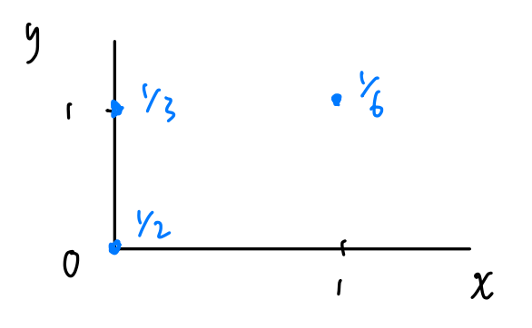

Introduction
A die is rolled. Let \(X\) = no. of 6’s and \(Y\) = no. of even numbers. Find the joint probability distribution of \(X\) and \(Y\).
| Number on Die | 1 | 2 | 3 | 4 | 5 | 6 |
|---|---|---|---|---|---|---|
| Value of X | 0 | 0 | 0 | 0 | 0 | 1 |
| Value of Y | 0 | 1 | 0 | 1 | 0 | 1 |
Hence,
\[ \begin{align} P(X = 1, Y = 1) &= P(6) = 1 / 6 \\ P(X = 0, Y = 1) &= P(2 \text{ or } 4) = 1/ 3 \\ P(X = 0, Y = 0) &= P(1 \text{ or } 3 \text{ or } 5) = 1/2 \\ \end{align} \]
We say that \(X\) and \(Y\) have a joint probability distribution. The joint pmf of \(X\) and \(Y\) is
\[ p(x, y) = P(X = x, Y = y) = \begin{cases} 1/2, & x = y = 0 \\ 1/3, & x = 0, y = 1 \\ 1/6, & x = y = 1 \\ \end{cases} \]
Note that the joint probability distribution of \(X\) and \(Y\) can be presented as,

1 Discrete Joint PMF
1.1 Properties
- \(0 \leq p(x, y) \leq 1\) for all \(x\) and \(y\)
- \(\sum_{x, y} p(x, y) = 1\)
2 Joint CDF
The joint cdf of \(X\) and \(Y\) is \(F(x, y) = P(X \leq x, Y \leq y)\).
2.1 Properties of joint CDFs
- \(F(x, y) \to 0\) as \(x \to -\infty\) or \(y \to -\infty\) (or both).
- \(F(x, y) \to 1\) as \(x \to \infty\) and \(y \to \infty\)
- \(F(x, y)\) is nondecreasing in both \(x\) and \(y\) directions.
- \(F(x, y)\) is right-continuous in both \(x\) and \(y\) directions.
Note that with their properties in mind, the joint cdf of \(X\) and \(Y\) in our example could be written more simply as
\[ F(x, y) = \begin{cases} 1/2, & x \geq 0, 0 \leq y < 1 \\ 5/6, & 0 \leq x < 1, y \geq 1 \\ \end{cases} \]
3 Marginal PMFs
The marginal pmf of \(X\) is
\[ p(x) = \sum_y p(x, y) \]
This pmf defines the marginal probability mass function of \(X\). Can also write \(p(x)\) as \(p_X(x)\).
3.1 Marginal CDF
Then, we can easily define the cdf of \(X\) with the above definition of the marginal pmf of \(X\) as \[ F(x) = P(X \leq x) \]
4 Conditional PMF
The conditional pmf of \(X\) given that \(Y = y\) is \[ p(x \mid y) = \frac{p(x, y)}{p(y)} \]
This density defines the conditional probability distribution for \(X\) given that \(Y = y\).
4.1 Degenerate Distribution
It is possible that the probability of \(X\) collapses to only one outcome and it is certain about that outcome with the given y-values.
5 Independence of Random Variables
Recall that two events \(A\) and \(B\) are independent if \(P(AB) = P(A)P(B)\). Then, we can similarity define that the two random variables \(X\) and \(Y\) are independent if for all \(x\) and \(y\), \[ p(x, y) = p(x) p(y) \]
We then write \(X \perp Y\) if the two are independent.
6 Expectations
\[ E(g(X, Y)) = \sum_{x, y} g(x, y) p(x, y) \]
For example,
\[ E(XY) = \sum_{x, y} xyp(x, y) = 0 * p(0, 0) + 0 * p(0, 1) + 1 p(1, 1) = p(1, 1) = 1/ 6 \]
6.1 Covariance and Correlation
Theorem 1 (Another Expression of Covariance) The covariance between \(X\) and \(Y\) is \[ Cov(X,Y) = E\{ ( X - E(X))(Y - E(Y)) \} \]
What’s the covariance between \(X\) and \(Y\) in our example?
Recall that \(X \sim \text{Bern}(1/6)\) and \(Y \sim \text{Bern}(1/2)\). Therefore \(E(X) = 1/6\) and \(E(Y) = 1/2\).
It follows that \[
\begin{align}
Cov(X, Y) & = \sum_{x, y} \left(x - \frac{1}{6} \right)\left(y - \frac{1}{2}\right) p(x, y) \\
& =\frac{1}{12} \frac{1}{2} + \left(-\frac{1}{12}\right)\frac{1}{3} + \frac{5}{12}\frac{1}{6} = \frac{1}{12} \\
\end{align}
\]
A useful result: \[ Cov(X, Y) = E(XY) - E(X)E(Y) \]
Proof. \[ \begin{align} \text{LHS} &= E\{ (X - \mu_X)(Y - \mu_Y) \} = E \{ XY - X \mu_X - Y \mu_Y + \mu_X \mu_Y \} \\ & = E(XY) - E(X)\mu_Y - E(Y)\mu_X + \mu_X \mu_Y \\ & = E(XY) - \mu_X \mu_Y = \text{RHS} \end{align} \]
6.2 Correlation
The correlation between \(X\) and \(Y\) is \[ \rho = Cor(X, Y) = \frac{Cov(X, Y)}{SD(X)SD(Y)} = \frac{Cov(X, Y)}{\sqrt{Var(X)} \sqrt{Var(Y)}} \]
Note that this is slightly more useful because this coefficient is “normalised” between \(-1\) and \(1\).
6.2.1 Meaning
\(\rho\) provides information about the relationship between \(X\) and \(Y\). If \(\rho > 0\) then high values of \(X\) are associated with high values of \(Y\). If \(\rho < 0\), then high values of \(X\) are associated with low values of \(Y\).
\(-1 \leq \rho \leq 1\) (In contrast \(Cov(X, Y) \in [-\infty, \infty]\).
Theorem 2 \[X \perp Y \implies \rho = 0\]
Proof. First, we can show that \(Cov(X, Y) = 0\) if the two random variables are independent.
\[ \begin{align} Cov(X, Y) &= E(XY) - \mu_X \mu_Y \\ & = E(X)E(Y) - \mu_X \mu_Y = 0 \end{align} \]
Where as the first line is by Theorem 1 and the second line is by independence of the two random variables.
Now, since \(\rho = \frac{Cov(X, Y)}{SD(X)SD(Y)}\), \(\rho = 0\).